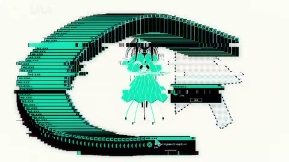

← 案例图谱 H01 / 主要视觉研究样本
败犬温水的七次败北之旅！ 真真夜夜 · 522.6万播放快照 · ≥10万 · B站原作 ↗
同构图内头像依次加入，就是关系信息的增加；它不需要被夸写成七次切镜。学习信息渐进和中心人物的稳定。
标记为已读 约108.775秒 · 案例代表帧 从画面里找依据
这一例先看什么 以原动画人物近景/反应镜头为主，少量备忘录UI、三竖屏、头像环绕作信息归纳，包装有明确功能，未追求全片特效堆叠。
审美判断 字幕通常位于画幅下部且有描边；15秒备忘录、35秒章节卡、110秒环绕头像与中心脸有清楚的信息层级。
迁移到自己的题材 产品功能解释、推理线索、人物关系、搜索与等待、制度压力、人与机器的关系。
教学提问：此刻观众必须读懂哪一条信息？如果所有界面都在动，谁仍然是主角？
带画面的分析单元 图像标出取样时间，对应观察中的关键状态。单帧不能独立证明运动，连续性请结合摘录。表达作用与应用场景是教学解读，复现路线是建议，不是原作者工程还原。
分析单元 01 / 15—15秒
手机备忘录UI／屏幕替换 实际观察 手机备忘录样式“恋爱败北记录”，七项名单
表达作用（教学解读） 用规则、选择与反馈组织关系，让抽象状态可被看见。
具体应用场景 人物关系、搜索、等待、推理、产品功能解释、系统压力；数值需要真实含义或明确虚构设定。
复现建议（非原作者工程还原） “屏幕替换／UI贴图”。平面静态卡容易，贴合倾斜手机需四角透视变换及遮罩；只据概览不认定完整跟踪已核验。
直出判断： 平面容易；透视和遮罩需处理
常见误用： 假数据制造伪解释；辅助文字太暗；每个窗口同时运动；手机界面只是装饰外壳。
分析单元 02 / 40—40秒
人物竖条多分屏 实际观察 三个人物的狭长竖条并列，标A/B/C，右侧黑底
表达作用（教学解读） 把人物并列，供观众比较身份与表情；狭长画幅是布局单位，不自动意味着擦除转场。
具体应用场景 多人介绍、同类反应比较、关系并置、候选对照。先统一眼位与裁幅，再决定是否需要动画。
复现建议（非原作者工程还原） “多分屏／人物条带拼贴”。裁切、位移及标签可直出；人物细抠视素材而定。
直出判断： 容易，需素材
常见误用： 窗口太多无主次，眼位错位、边框挤脸，层的出现没有叙事理由。
分析单元 03 / 108.19—109.53秒
环绕头像／错峰入场 实际观察 蓝天底主角抠像，周围圆角人物头像按顺序出现，约108.19、108.44、108.69、108.94、109.11、109.28、109.53秒逐步填满
表达作用（教学解读） 稳定主角位置，让关系人数逐项增加；圆周布局承担关系展示，错峰入场给观众识别时间。
具体应用场景 群像介绍、人物关系、团队成员、围绕中心主题的功能列表；不应把头像圆周排布当作相机环绕。
复现建议（非原作者工程还原） “头像环绕／错峰入场／角色关系图”。这是用户参考封面的动态来源。贴纸、描边、标签、排布和错峰时间线容易直出；主角与头像需合适素材／遮罩。连续入场属于一个构图的图层更新，不计七次换镜。
直出判断： 容易，需人物图层
常见误用： 假数据制造伪解释；辅助文字太暗；每个窗口同时运动；手机界面只是装饰外壳。
分析单元 04 / 111.36—111.7秒
模糊白闪转场 实际观察 头像构图逐渐虚化，接亮白，再显出双人新画面
表达作用（教学解读） 短暂中断视觉连续性，强调接触、转折或心理断裂；其价值来自前后的对比。
具体应用场景 打击点、快速连接、记忆跳跃、段落转折；需要根据内容选择强度。
复现建议（非原作者工程还原） “模糊＋白闪过渡”。高斯模糊、白色叠层和前后素材透明度容易直出。
直出判断： 容易
常见误用： 把闪烁当节奏本身；没有稳定画面作参照；为掩盖动作不清持续加闪。
分析单元 05 / 140—140秒
聊天气泡UI 实际观察 蓝白聊天界面与连续气泡
表达作用（教学解读） 用消息的先后与发言位置建立互动关系；聊天气泡是信息容器，与漂浮折射气泡不同。
具体应用场景 对话、误会、推理线索、沟通等待、界面叙事。先核发言主体和阅读顺序。
复现建议（非原作者工程还原） “聊天UI／气泡排版”。给定文本后容易，未据概览认定逐字打字效果。
直出判断： 容易；未确认打字动画
常见误用： 假数据制造伪解释；辅助文字太暗；每个窗口同时运动；手机界面只是装饰外壳。
用连续画面核对 保留原研究的多段局部摘录。片段含音轨不代表已听审；本资料不评价音乐卡点或对白节奏。
短时变化怎样理解 108–112秒专项显示头像围绕稳定中心依次入场，复杂信息有共同锚点；其他原片剪接与UP连接尚未完全拆开，不能把原动画换镜都算UP。
把镜头连接、版式更新、局部图层变化和镜内运动分开记录。所查窗口是下限，不是全片平均或AI／人工排名。
原始逐窗记录 → 这次练习的约束 用同一句“正在寻找一个人”做三种状态：有秩序的搜索、遇阻、失控。每版只允许一个主信息区和两层辅助信息。
先写“我希望观众明白／感到什么”，再选本页的一种手法。完成无效果基础版后再加层；解释新增层带来的收益和代价。
打开练习与复盘表 → 来源、观看范围与制作归属 实际检查范围： 41 overview frames at approximately 5s spacing; 84–86s and 155.4–157.4s dense source frames; 108–112s portrait composition at 12 requested samples/s.
制作线索： 简介注明误解向，介绍改写剧情和字幕；人工主导候选，未证明完全不用AI。
边界： 大量价值在语义选材和字幕重编，无法仅凭无声接触表验证笑点/误解向对白；人工主导候选不等于全流程零AI。
播放快照保存时间（UTC）：2026-10-20T00:33:47.038720+00:00。H30制作方式为推定；同源改编、仿作和转载依原记录标注。
原始案例记录 · 选样表 把你的判断留下来 用“我看到……因此我理解……换题材时我会……”写三句 笔记仅尝试保存在本机浏览器；浏览器策略可能限制本地文件存储，重要内容请导出。
导出本机学习笔记 沿着同一问题继续阅读
AI29 细节、反应与转折
先找欲望、行动、代价，再看镜头细节。人类预设故事与生成镜头在这里是不同劳动层，不能混为自动成片。
主要样本 7个分析单元
H38 细节、反应与转折
冷色、竖排日记与涂鸦遮脸共同形成主观情绪；密字压过人物是表达选择，也会损失可读性，应说明取舍。
主要样本 8个分析单元

AI44 界面、程序与秩序
低位深启动界面逐步变彩色，点云成形、角色换装、递归与逐层拆解建立可见状态序列；统一绿发角色和紫环维持联系。
主要样本 8个分析单元